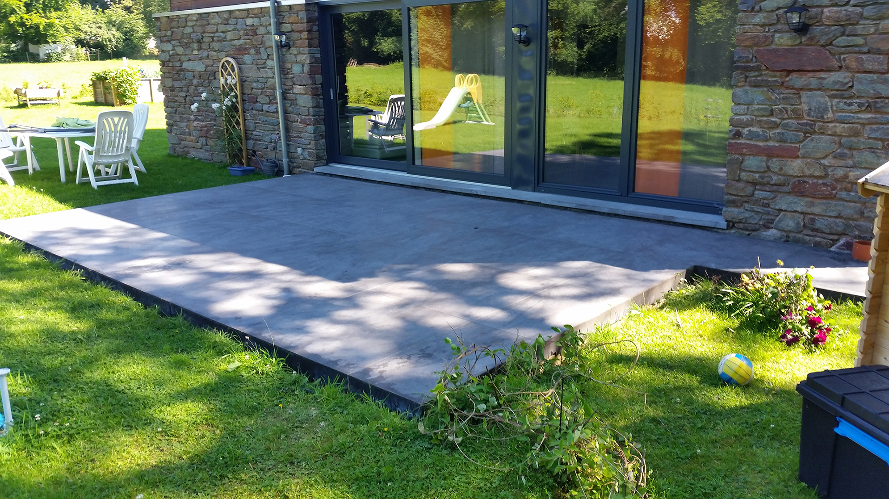
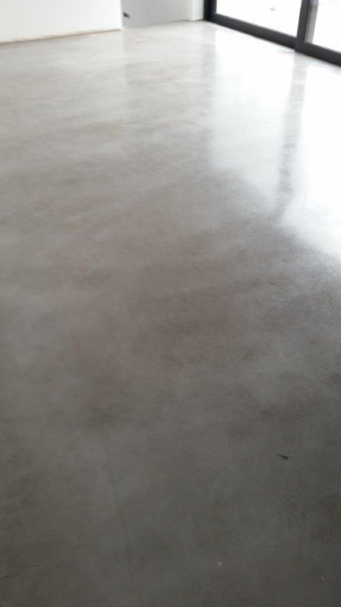
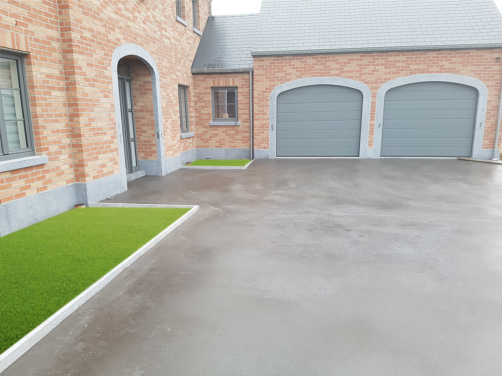

Le travail bien fait
Pas de raccourcis. Pas de compromis sur la qualité. Chaque chantier est une carte de visite.
Une équipe luxembourgeoise spécialisée dans le béton décoratif, équipée pour fournir un travail propre et précis.
Fondée à Fischbach, au cœur du Luxembourg, Prodal s'est imposée comme une référence dans le travail du béton décoratif. Notre force : une équipe formée à toutes les finitions — lissé, brossé, semi-poli, lavé — équipée des bonnes machines pour fournir un résultat homogène, surface après surface.
Nous croyons que le béton mérite d'être traité comme un noble matériau. Cette conviction guide chacune de nos interventions, du plus petit accès résidentiel au plus grand sol industriel.


Pas de raccourcis. Pas de compromis sur la qualité. Chaque chantier est une carte de visite.
Comprendre le projet avant de le proposer. Un échange humain, sans jargon.
Talocheuses, brosses, machines à projeter : un outillage professionnel pour un rendu propre et régulier.
Une entreprise luxembourgeoise, des matériaux choisis, des partenaires de confiance.


Notre équipe maîtrise toutes les techniques de finition du béton décoratif. Chacun a sa spécialité — préparation du support, coulage, finition mécanique, traitement — mais tous partagent la même exigence de précision.